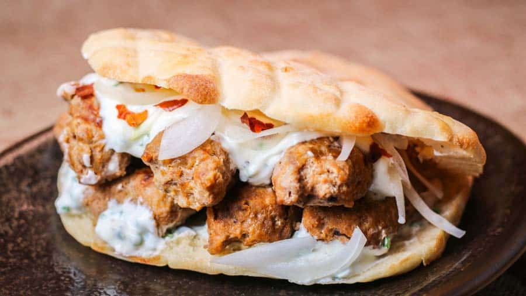

Bosnian Cevapi
Ingrediants
- 8 Grams of Dry Yeast
- 150 ml of Lukewarm Milk
- Two teaspons of Salt Whinsk
- 5 tablespoons of yogurt.
- 500 grams of Bread Flour
- Tablespoon of Water
- Ground Beef or Ground Lamb (600 grams or 300 grams respectively)
- Salt and Pepper
- Cloves minced with Garlic
- a drizzle of Olive Oil
- Sliced Chives
- Sour Cream
Why I Love It
This has always been a fan favorite in my family, and we gennerally always eat some of these every once in a while when we have the money for it. Theres this place called the "Bosnian Resturant" where we usually order Cevapi, allthough they're kind of expesnive for what they are. You can order up to 15 Cevapi per box, but its already $20 for 2 packs of 5 chevapi and 1 pack of 10 chevapi, so make sure your wallet isn't on life support.
Steps to Make
- Put 8 grams of Dry Yeast into 150 ml of Lukewarm Milk, and Mix. Let the mix sit for 5 minutes afterwards.
- In a seperate bowl, put in 500 grams of Bread flour. Add 2 teaspons of Salt Whinsk, half a cup of water and 5 tablespoons of yogurt. Mix throughout the process.
- If the dough isnt sticky enough, add another tablespoon of water. Knead the dough until smooth.
- Roll the dough into a ball, and put into a bowl with a towel cover. Place inside somewhere warm for 1hr and 30mins.
- Preheat your oven to 500* F or 260* C, and then afterwards you slice the dough into seperate pieces. You should mesh the dough into a flat circle piece, and make a grid pattern on the dough.
- Put into the oven and the bread should be ready after around 30-40 minutes.
- Get your choice of meat and place inside bowl, add seasonings such as salt, pepper, minced garlic, ect.
- After mixing, roll pieces of meat into miniuture sasuages.
- Put onto stove to cook until each piece is browned.
- You can just stop here, or go the additional mile to make sour cream as shown in the video.